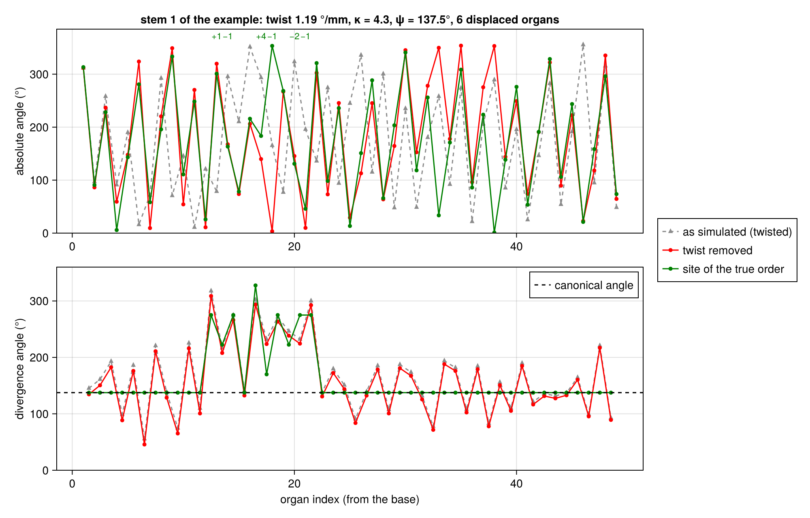
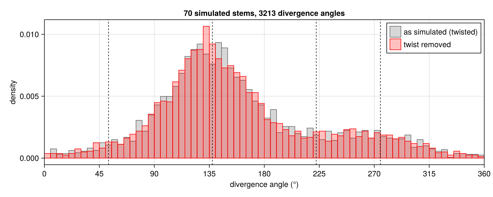

Simulating stems
The model of the package is also a simulator of phyllotaxis. It makes stems as they are measured: absolute azimuths with some imprecision, a twist of the stem, the occasional aberrant angle, and organs that do not always sit in the order of their sites. Because the truth is known, simulated stems serve to:
- test a measurement or analysis pipeline, against stems whose order, twist and precision are known;
- see what a statistic looks like (a histogram of divergence angles, a count of swaps) under given conditions;
- check a fitted model against its data, by comparing the data with stems drawn from the fit (below).
The stem model
Each stem has five ingredients, each set by a few keywords of simulate_stems:
| ingredient | what is drawn | keywords | in the example below |
|---|---|---|---|
| the order | which site each organ belongs to | the costs η (first argument) | $\eta = (-1.2, -2.5, -3.1, -4.0)$ |
| the spiral | its angle, orientation and offset | α | golden in 96 % of the stems |
| the precision | the scatter of the angles around their sites | logμκ, σκ | $\kappa \approx 6.4$, a circular sd of 23° |
| the twist | a rotation growing along the stem | x, torsion_mean, torsion_sd | 1.0 ± 0.5 °/mm |
| outliers | aberrant angles, uniform on the circle | outlier | one angle in 200 |
The order. The organ at height $p$ belongs to site $\sigma[p]$, displaced by $d = \sigma[p] - p$. A displacement by $d$ (up or down) has propensity $e^{\eta_d}$ relative to staying in place: with $\eta_1 = -1.2$, a displacement by one is $e^{-1.2} \approx 0.3$ times as likely as none. The order can instead come from independent commitment delays (simulate_stems(f::DelayLaw; ...), §5), with the same other keywords.
The spiral. Site $j$ sits at $\phi + o\,(j - 1)\,\psi$: $\psi$ is the golden angle (137.5°) with probability α, else the Lucas angle (99.5°), the orientation $o = \pm 1$ and the offset $\phi$ are uniform. Another list of canonical angles is given by angles, with α a tuple of stick-breaking probabilities (Canonical angles).
The precision. Each angle is von Mises around its site. Its concentration $\kappa$ varies from stem to stem: $\log\kappa$ is normal, with mean logμκ and sd σκ ($e^{1.85} \approx 6.4$ for the median stem of the example).
From κ to degrees
A von Mises of concentration $\kappa$ has a circular sd of about $1/\sqrt{\kappa}$ radians:
| $\kappa$ | 2 | 4 | 6 | 10 | 25 | 100 |
|---|---|---|---|---|---|---|
| sd (°) | 41 | 29 | 23 | 18 | 11 | 6 |
The twist. The organ at height $p$ is turned by $\omega\,x_p$, with one rate $\omega$ per stem, normal with mean torsion_mean and sd torsion_sd, in degrees per unit of $x$. The coordinate $x$ is the stem length below each organ in mm (torsion_coordinate(internodes)), or its position on the stem (the default, degrees per organ).
Outliers. Each angle is replaced, with probability outlier, by a uniform one: a measurement error, or an organ that does not belong to the spiral.
Example: stems like those of a wild type
Simulation. Seventy stems of 30 to 60 organs, whose internodes shorten from about 9 to 3 mm along the stem, with the parameters of the table above (typical of wild-type Arabidopsis thaliana stems measured from the base):
using PhyllotaxisFold, Random
rng = Xoshiro(2026)
organs = rand(rng, 30:60, 70) # organs per stem
internodes(n) = [9.0 - 6.0 * (p - 1) / (n - 2) for p in 1:(n - 1)]
x = [torsion_coordinate(internodes(n)) for n in organs] # stem length (mm) below each organ
sim = simulate_stems(
[-1.2, -2.5, -3.1, -4.0]; # the costs η_1 … η_4
plants = 70, organs, x,
α = 0.96, # the spiral: golden in 96 % of the stems
logμκ = 1.85, σκ = 0.37, # the precision
torsion_mean = 1.0, torsion_sd = 0.5, # the twist, °/mm
outlier = 0.005, # outliers
rng,
)What comes back. One entry per stem in each field:
| field | content |
|---|---|
sim.angles | the absolute azimuths (radians), from the base: the "measurements" |
sim.orders | the true order: sim.orders[s][p] is the site of the organ at height p |
sim.torsion, sim.κ | the twist rate (°/mm) and the precision of the stem |
sim.ψ, sim.o, sim.ϕ | its spiral: angle, orientation, offset |
sim.outliers | the heights of its aberrant angles |
Divergence angles. divergence_angles turns absolute angles into the angles between consecutive organs, in degrees. Given the orientation of the stem's spiral, the canonical divergence reads 137.5° whichever way it turns:
s = 1 # the first stem (figure 1)
measured = divergence_angles(sim.angles[s]; o = sim.o[s])
untwisted = sim.angles[s] .- deg2rad(sim.torsion[s]) .* x[s]
corrected = divergence_angles(untwisted; o = sim.o[s]) # with the stem's twist removed
# the first organs of the stem, in degrees
(; absolute = rad2deg.(sim.angles[s][1:4]), divergence = measured[1:3], divergence_untwisted = corrected[1:3])(absolute = [311.7297279125236, 97.02668850105195, 258.15495456218514, 91.10346720932537], divergence = [145.29696058852838, 161.1282660611332, 192.9485126471402], divergence_untwisted = [134.54592842576542, 150.52973080848034, 182.50247430459754])Figure 1 shows this stem, figure 2 the divergence angles of all seventy.

Figure 1. Stem 1 of the example, whose divergence angles are printed above. Top: the absolute angles as simulated (grey), with the twist removed (red), and the site of each organ in its true order (green); the red points scatter around the green ones by the angular imprecision. The labels mark the displaced organs with their displacement $d = \sigma[p] - p$ (+1: the organ belongs to the site above its position, −1: to the site below). Bottom: the divergence angles of the same three series. The green line leaves the canonical angle where organs are displaced; the grey and red one scatters around it everywhere.

Figure 2. The divergence angles of the seventy stems, as simulated and with each stem's twist removed. The dashed lines mark the canonical angle ψ and the divergences that displaced organs produce (2ψ, −ψ, 3ψ).
Reading the divergences. A displaced organ changes two divergences at once. A swap of two neighbours replaces $\psi, \psi$ by $2\psi$ (275°) then $-\psi$ (222.5°); a displacement by two produces $3\psi$ (52.5°) among others. At this precision (a circular sd of 23°), these peaks are broad and overlap with the scatter of in-place organs: divergence angles alone cannot tell a displaced organ from an imprecise one. This is why the package decodes the orders from the absolute angles, all at once (§3).
Checking a fit against its data
Replicates. simulate_stems(fit) draws stems from a fitted model, with the numbers of organs and the twist coordinates of the data, and the fitted laws of the order, precision, spiral, twist and outliers. With laplace = true, the parameters of each replicate are first drawn from the uncertainty of the fit (its Laplace approximation):
r = fit_map(m) # m: the model of the data
reps = [simulate_stems(r; laplace = true) for _ in 1:200] # 200 replicates of the dataA statistic. Choose a statistic that the model does not fit directly. Here, the fraction of divergence angles more than 60° away from the canonical one, computed with the orientation of each stem (decoded for the data):
using Statistics
off_canonical(angles, o) = mean(abs(d - 137.5) > 60 for (y, os) in zip(angles, o) for d in divergence_angles(y; o = os))
o_data = [d.o for d in decode_orders(r; full = true)]
observed = off_canonical(m.data, o_data)
replicated = [off_canonical(z.angles, z.o) for z in reps]Reading the result. mean(replicated .≥ observed) is a posterior predictive p-value. A value near 0 or 1 says that the data differ from what the fitted model produces, in the direction the statistic measures; a value in between says that they agree for this statistic, not that the model is right. Other useful statistics: the histogram of divergence angles (figure 2) against its spread over the replicates, the runs of displaced organs, or the spread of any of them between stems.
Code. simulate_stems(η; plants, organs, x, logμκ, σκ, α, outlier, torsion_mean, torsion_sd, rng), simulate_stems(f::DelayLaw; ...) (the same keywords), simulate_stems(fit; laplace, rng), divergence_angles(y; o), torsion_coordinate, sample_prior(model) (stems from the prior). The figures are made by docs/make_simulation_figures.jl.